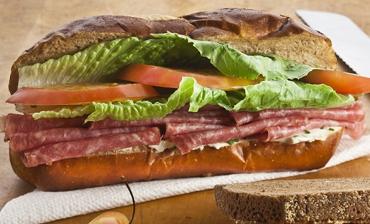

Salami Sandwich

Description
This simple salami sandwich is perfect for those hot summer days when you don't want to fire up the oven. The
olive mixture poses as a dressing for the lettuce and tomato but also soaks down in that top piece of bread so
it's not dry.
Ingredients
- 1 hoagie bun, toasted and split
- 1 teaspoon yellow mustard
- 6 slice (3-1/8" dia x 1/16" thick)s salami
- 2 slices Colby-Jack cheese
- 2 slices tomato
- 1 leaf red leaf lettuce
- 2 teaspoons sliced ripe olives, drained
- 2 teaspoons sliced green olives with pimiento
- 2 teaspoons zesty Italian-style salad dressing
Directions
- Place bottom bun on a plate and spread mustard over the bun. Top with salami, cheese, tomato, and lettuce
leaf.
- Combine black olives, green olives, and salad dressing in a bowl. Place mixture on top of the lettuce. Top
with remaining half of bun. Serve immediately.